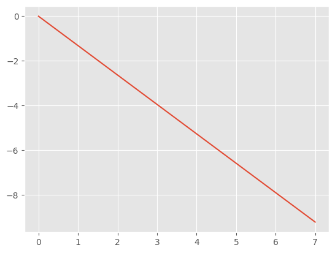
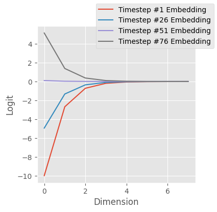
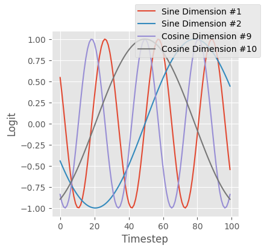
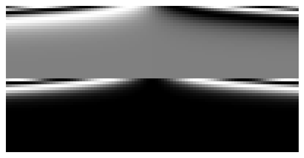
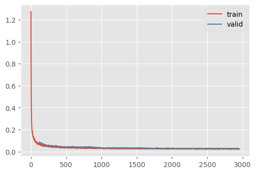
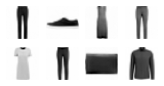

dls = get_fashion_dls(bs=512)Diffusion U-Net
Unconditional U-net from scratch
Adapted from
Time embedding
Supposedly, time embeddings are neccesary to achieve modeling high performance
emb_dim = 16
# This was thought to be the longest sequence that a transformer
# should be able to handle, even though nowadays sequences can
# be much longer
max_period = 10_000
print(f"{-math.log(max_period)=}")
exponent = -math.log(max_period) * torch.linspace(0, 1, emb_dim // 2)
plt.plot(exponent);-math.log(max_period)=-9.210340371976184
They are computed by computing the outer product of the time vector, ts with the exponent function…
bs = 100
ts = torch.linspace(-10, 10, bs)
embedding = ts[:, None].float() * exponent.exp()[None, :]
embedding.shapetorch.Size([100, 8])note here that, so far, the embeddings aren’t very different
fig, ax = plt.subplots(figsize=(4, 4))
for i in range(0, bs, 25):
ax.plot(embedding[i], label=f"Timestep #{i+1} Embedding")
ax.set(ylabel="Logit", xlabel="Dimension")
fig.legend();
…and projected into cosine and sine space, and then concatenated.
embedding = torch.cat([embedding.sin(), embedding.cos()], dim=-1)
embedding.shapetorch.Size([100, 16])fig, ax = plt.subplots(figsize=(4, 4))
for i in range(2):
ax.plot(embedding[:, i], label=f"Sine Dimension #{i+1}")
for i in range(8, 10):
ax.plot(embedding[:, i], label=f"Cosine Dimension #{i+1}")
ax.set(ylabel="Logit", xlabel="Timestep")
fig.legend();
Overall, this results in a time embedding that is similar to its neighbors, but is overall very diverse. This figure demonstrates this, where the first column is similar to the second column, but dissimilar to the 100th column.
show_image(embedding.T);We can consolidate this.
timestep_embedding
timestep_embedding (ts, emb_dim, max_period=10000)
Editting the number of dimensions increases the column size
show_image(timestep_embedding(ts, 50).T);
Decreasing the max_period increases inter-column heterogeneity.
show_image(timestep_embedding(ts, 16, 100).T);Let’s reimplement the U-net with time
Conv
Conv (c_in, c_out, ks=3, stride=1)
Wrapper for a Conv block with normalization and activation
EmbeddingPreactResBlock
EmbeddingPreactResBlock (t_embed, c_in, c_out, ks=3, stride=2)
Conv res block with the preactivation configuration
SaveTimeActivationMixin
SaveTimeActivationMixin ()
Helper to save the output of the downblocks to consume in the upblocks
TResBlock
TResBlock (t_embed, c_in, c_out, ks=3, stride=2)
Res block with saved outputs
TDownblock
TDownblock (t_embed, c_in, c_out, downsample=True, n_layers=1)
A superblock consisting of many downblocks of similar resolutions
TUpblock
TUpblock (t_embed, c_in, c_out, upsample=True, n_layers=1)
A superblock consisting of many upblocks of similar resolutions and logic to use the activations of the counterpart downblock.
TimeEmbeddingMLP
TimeEmbeddingMLP (c_in, c_out)
Small neural network to alter the “raw” time embeddings
TUnet
TUnet (nfs=(224, 448, 672, 896), n_blocks=(3, 2, 2, 1, 1), color_channels=3)
Diffusion U-net with a diffusion time dimension
FashionDDPM
FashionDDPM ()
Training specific behaviors for the Learner
train
train (model, dls, lr=0.004, n_epochs=25, extra_cbs=[], loss_fn=<function mse_loss>)
un = train(
TUnet(
color_channels=1,
nfs=(32, 64, 128, 256, 384),
n_blocks=(3, 2, 1, 1, 1, 1),
),
dls,
lr=4e-3,
n_epochs=25,
)| loss | epoch | train |
|---|---|---|
| 0.150 | 0 | train |
| 0.087 | 0 | eval |
| 0.056 | 1 | train |
| 0.054 | 1 | eval |
| 0.046 | 2 | train |
| 0.051 | 2 | eval |
| 0.040 | 3 | train |
| 0.044 | 3 | eval |
| 0.037 | 4 | train |
| 0.044 | 4 | eval |
| 0.035 | 5 | train |
| 0.041 | 5 | eval |
| 0.034 | 6 | train |
| 0.044 | 6 | eval |
| 0.032 | 7 | train |
| 0.037 | 7 | eval |
| 0.031 | 8 | train |
| 0.031 | 8 | eval |
| 0.030 | 9 | train |
| 0.033 | 9 | eval |
| 0.029 | 10 | train |
| 0.035 | 10 | eval |
| 0.029 | 11 | train |
| 0.032 | 11 | eval |
| 0.029 | 12 | train |
| 0.035 | 12 | eval |
| 0.028 | 13 | train |
| 0.030 | 13 | eval |
| 0.028 | 14 | train |
| 0.028 | 14 | eval |
| 0.027 | 15 | train |
| 0.028 | 15 | eval |
| 0.027 | 16 | train |
| 0.029 | 16 | eval |
| 0.027 | 17 | train |
| 0.027 | 17 | eval |
| 0.026 | 18 | train |
| 0.027 | 18 | eval |
| 0.026 | 19 | train |
| 0.027 | 19 | eval |
| 0.026 | 20 | train |
| 0.027 | 20 | eval |
| 0.026 | 21 | train |
| 0.026 | 21 | eval |
| 0.026 | 22 | train |
| 0.025 | 22 | eval |
| 0.026 | 23 | train |
| 0.026 | 23 | eval |
| 0.025 | 24 | train |
| 0.026 | 24 | eval |

CPU times: user 13min 10s, sys: 24.9 s, total: 13min 34s
Wall time: 13min 42sxb, _ = dls.peek()
xb.shapetorch.Size([512, 1, 32, 32])n_steps = 100
ts = torch.linspace(1 - (1 / n_steps), 0, n_steps).to(xb.device)
x_t = torch.randn(16, 3, 64, 64)ddpm
ddpm (model, sz=(16, 1, 32, 32), device='cpu', n_steps=100)
x_0, _ = ddpm(un, (8, 1, 32, 32))
show_images(x_0, imsize=0.8)100%|████████████████████████████████████████████████████████████| 99/99 [00:00<00:00, 145.43time step/s]
This is not bad! This achieves a similar performance to the Huggingface implementation with a simliar number of parameters.